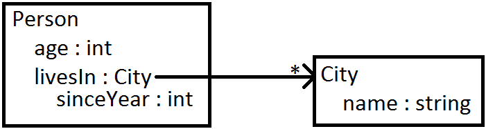
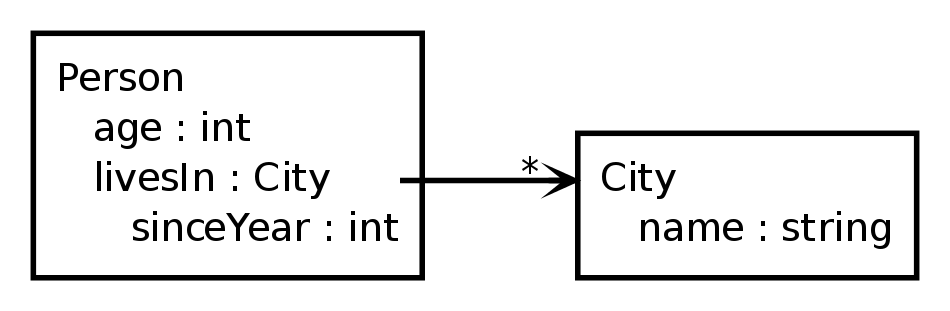

Graphviz Example
An "UML-like" Graph (from Stackoverflow )
As part of my experiments to see how far I can coerce Graphviz into making graphs people have drawn with other tools, I decided to recreate a graph the original author claimed was an idiosyncratic UML class diagram.
What the original author wanted, but failed to create in Graphviz was this:

In the original author's attempt, he gave nodes a record
shape so he could utilize the eability to connect edges to certain ports.
This was a good idea, unfortunately for him he ran into various problems
that stem from not knowing how Graphviz works and the various quirks
this entails.
Luckily I have a bit more experience in Graphviz and with relatively little effort, this was what I came up with, utilizing records:

To achieve the desired effect (removing the horizontal lines), I hid
the records border by setting its color to none. I then
placed a cluster around the node and used that to draw a border
instead.
Other than than, I added some whitespace, aligning the text, tweaked
the edge label a bit and used lhead (which requires
compound = true set on the graph to work) to have the
edge's head arrow point to the cluster's border instead of to the
node with the port.
The end result is pretty close to the desired look, although the use of clusters is a bit annoying and the edge doesn't quite start at the node's text. An attampt using an HTML shape for the nodes might fix this. For now it will have to do.
The source code I used can be found at the end of this article.
My Version
This work is licensed under a Creative Commons Attribution-ShareAlike 3.0 Unported License
digraph G {
graph [
compound = true // To clip the head at the cluster border
dpi = 200
fontname = "Bitstream Vera Sans"
fontsize = 8
rankdir = "LR"
ranksep = 1 // Add a bit more space inbetween nodes
]
subgraph [
penwidth = 2 // Make the cluster's borders a bit thicker
]
node [
color = none // Hide the node's border
fontname = "Bitstream Vera Sans"
fontsize = 8
height = 0 // Make the node as small as possible (it will grow if it needs more space)
margin = 0 // Remove unneeded whitespace
shape = "record"
]
edge [
arrowhead = "open"
fontname = "Bitstream Vera Sans"
labelangle = -5 // Place the asteriks closer to the line
labelfontsize = 12 // Make the asteriks a bit bigger
labeldistance = 2.5 // Place the asteriks further away from the arrow head
penwidth = 2 // Make the line a bit thicker
]
/* @NOTE: escaping spaces in the label using '\' doesn't seem to work so using ' ' instead. */
subgraph cluster_Person {
Person [
label = "<g0> \N\l | <g1> age : int\l | <g2> livesIn : City\l | <g3> sinceYear : int\l"
]
}
subgraph cluster_City {
City [
label = "<f0> \N\l | <f1> name : string\l"
]
}
Person:g2 -> City:f0 [headlabel = "*", lhead = "cluster_City"] // lhead allows us to point to the cluster's border instead of the node, as long as we add `compound = true` to the graph
}